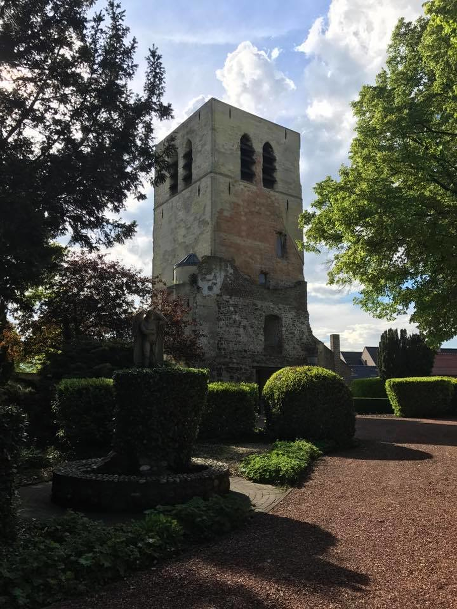

Ahh the ordinary City of Humans, Dilsen-Stokkem.
The place where The Child grew up, though it is plagued by humans,
It still has a lot of forest and nature. A rare sight these days.
For those who have seen "Beau Sejour" might remember that it is a real hotel and tavern
In a real Place called Lanklaar, part of Dilsen-Stokkem.
Mostly I only remember the bad Limburgisch Accent...
Another interesting place is called "De Oude Toren", It used to be a church.
It was built in the year 1250 and since then it had survived fires and wars.
Untill a new one was built in 1912, where they demolished the old church,
Except for it's tower.
If you are interested in more of the beauty of Dilsen-Stokkem,
click on this, to be magically transported
to another informative book.
